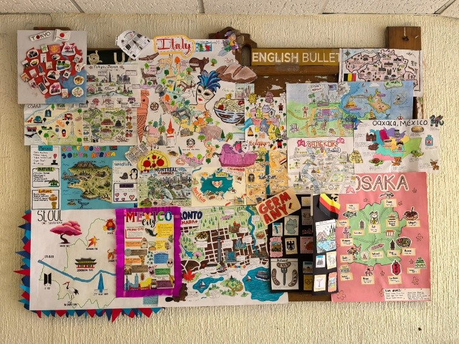
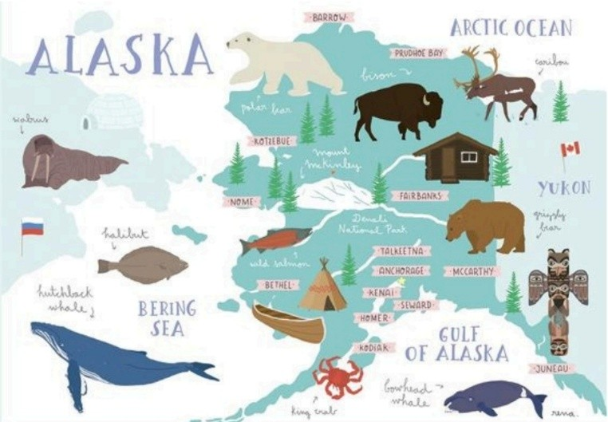

Welcome to the First Digital Edition of Our Student Newspaper
This digital newspaper is an educational project developed for our English class. Our main goal is to practice and improve our language skills through journalism, highlighting the most relevant events, exams, and cultural activities happening across the campus community at UAEMEX.
Through these articles, we explore contemporary campus life while applying grammar, vocabulary, and stylistic structures learned during the course. We hope you enjoy reading our updates!
¡The World in One Place! The Outlines of Planet Earth 🌍
During late April, the self-access classroom hosted a vibrant global project. Fourth-semester students created handmade maps to illustrate what makes each country special, capturing our planet's diverse beauty on an upper-floor bulletin board in Building A.

How Was This Activity Carried Out?
Students researched assigned nations and faithfully reproduced their geographical lines by hand on poster boards. To enhance learning, each project featured short written descriptions detailing essential identity elements:
- Political & Cultural Identity: Clear political divisions alongside core beliefs, clothing, and traditional food.
- Flora & Fauna: Representative wildlife and animals acting as deep cultural symbols.
- Local Wonders: Iconic landmarks, monuments, and magical tourist destinations.

What Did We Learn?
Guided by teacher Elena Leon, this collaborative project drove students to unleash their creativity. Beyond geography, it generated shared joy and immense pride as their collective hard work took center stage on the campus news board.
Editorial Team / Developed by:
- Barrios Betanzos Fernando Ezequiel - Account Number: 1234567
- Diaz Perez Santiago - Account Number: 7654321
- Garcia Hernandez Jesus Sebastian - Account Number: 1234567
- Morales Castillo Julissa Jaretzy - Account Number: 7654321
- Ortiz Zaragoza Alexis Jonthan - Account Number: 1234567
- Salas Romero Manuel Alejandro - Account Number: 7654321
English 7 • Group: OF • Professor: Marilu Carrillo Badillo